Help
xDescription
This tool takes a Petri net as input, analyses it to classify the Petri net and determine if it can be encoded into CCS output.
The input Petri net can be given either by importing a PNML-file using the -button or drawing a Petri net in the Petri Net (Input)-box.
Whenever the Petri net is changed, the Petri net is classified and the result is shown in the Classification (Analysis)-box. Colored boxes (black text) means the Petri net is in that class while grayed out boxes (gray text) means it is not in that class.
Whenever the Petri net is changed and is a group-choice net or 2-τ-synchronisation net, the Petri net encoded as a CCS process is shown in the CCS (Output)-box. The Petri Net (IR)-box shows the 2-τ-synchronisation net that is generated during the encoding of a group-choice net.
Draw Petri Net
Add Place: Drag-and-drop place onto empty space.
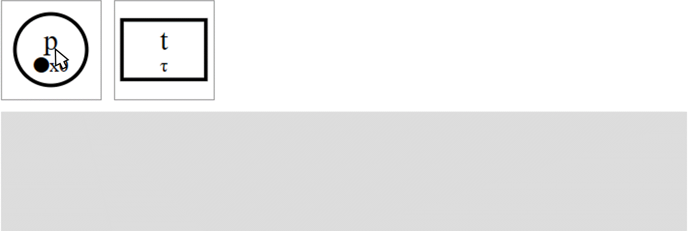Add Transition: Drag-and-drop transition onto empty space.
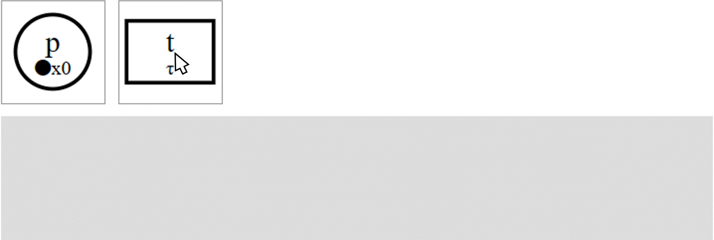Select element: Click on element.
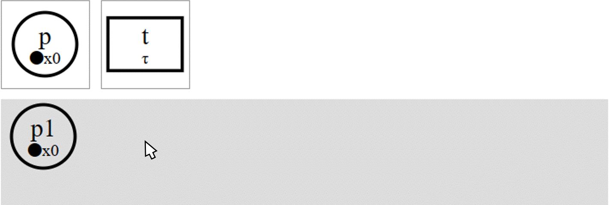Deselect element: Click on selected element.
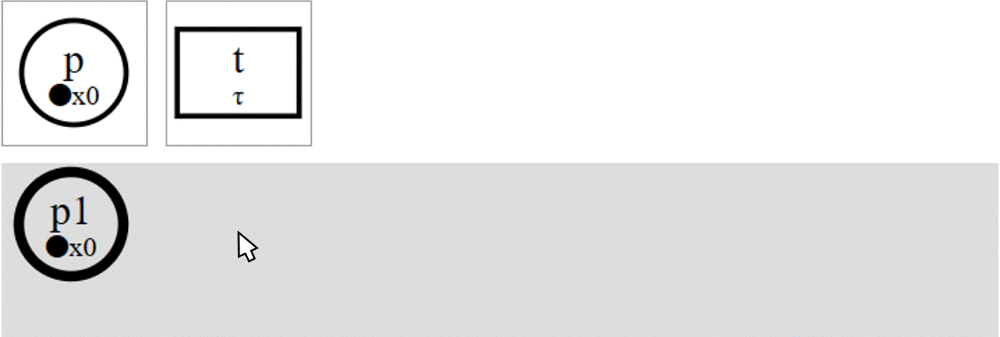Add edge: Select place/transition -> click on transition/place.
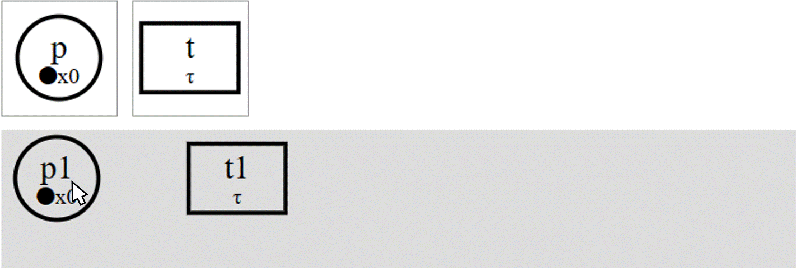Change place tokens: Right click place -> enter tokens -> click on .
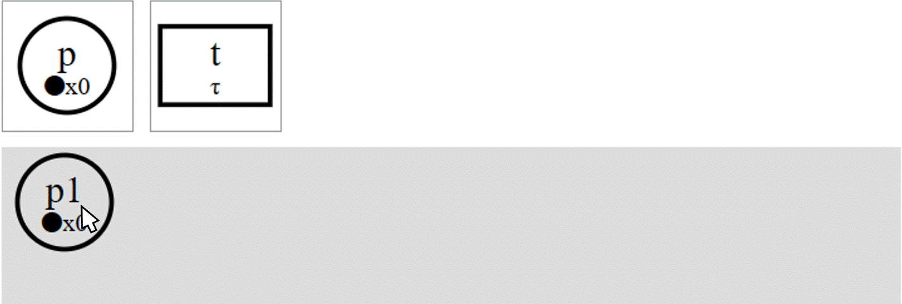Change transition label: Right click transition -> enter label -> click on .
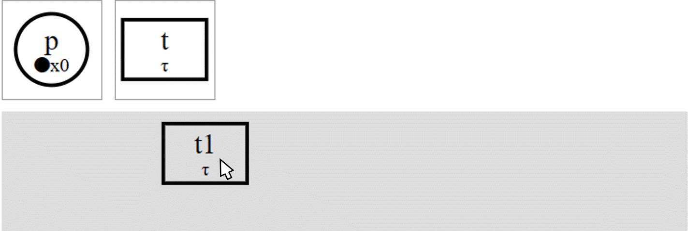Delete place: Right click place -> click on .
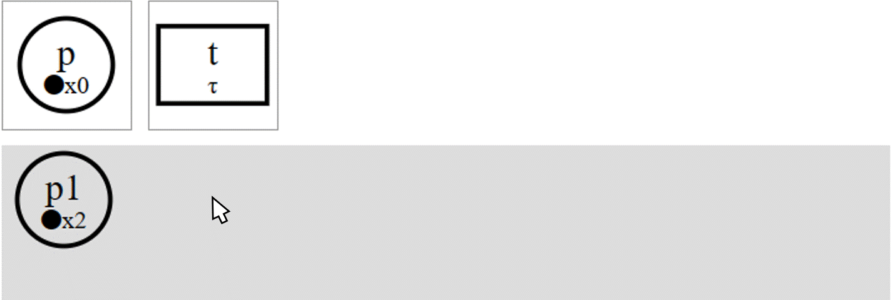Delete transition: Right click transition -> click on .
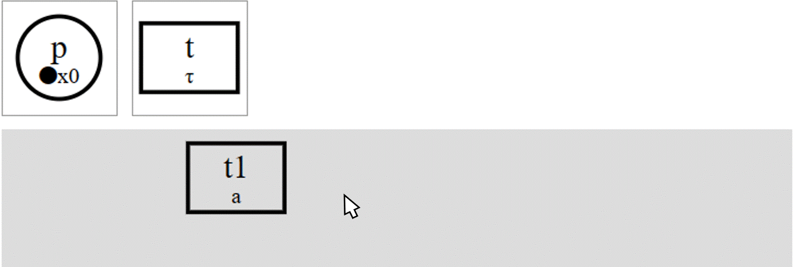Delete edge: Right click edge -> click on .

Move Petri net: Drag anywhere (except selected node).
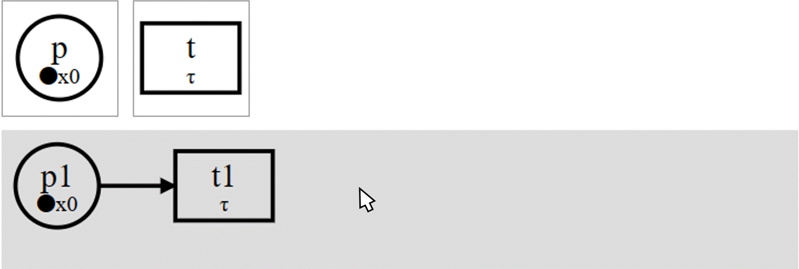Move place/transition: Select place/transition -> drag selected place/transition.
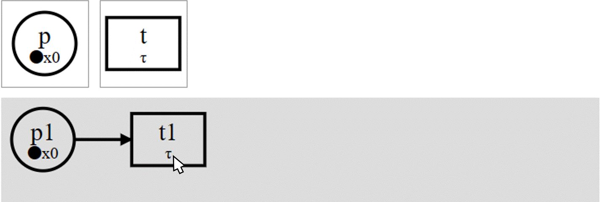Add multi-line edge: Select place/transition -> click on empty space (0 or more times) -> click on transition/place.
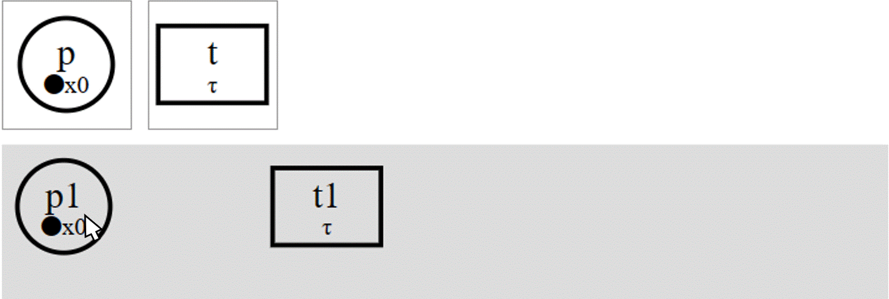Cancel multi-line edge: Click on selected place/transition.
Move multi-line edge point: Select multi-line edge point -> click on empty space (0 or more times) -> click on transition/place.
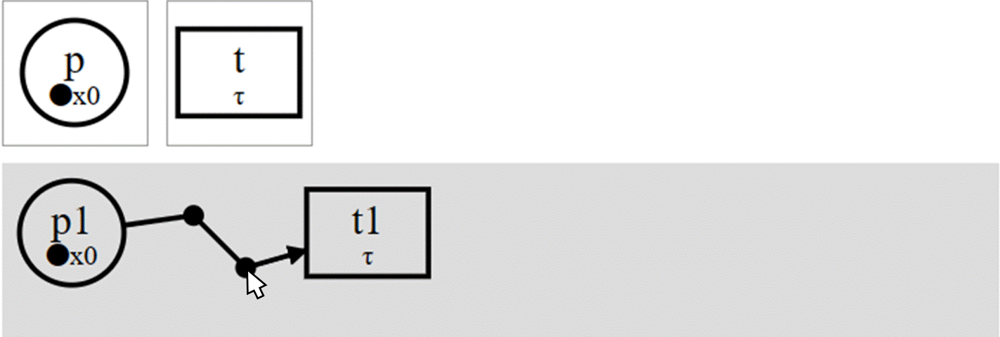Import Petri Net (PNML-file)
A PNML-file can be imported using the -button. The PNML-file must represent a Place/Transition net like in the three examples on this page. PNML-files are imported in a loose fashion which means that only the following are checked/used:
- The file is valid XML.
-
Each place is represented by a
<place>-tag with:- (Required) Unique id in a
id-attribute on the<place>-tag. - (Optional) Marking (number of tokens) as the content of a
<text>-tag in a<initialMarking>-tag in the<place>-tag. Default: 0 tokens. - (Optional) Position of the place as
x- andy-attributes on a<position>-tag in a<graphics>-tag in the<place>-tag. Default: A unique position (assuming no elements have positions).
- (Required) Unique id in a
-
Each transition is represented by a
<transition>-tag with:- (Required) Transition id in a
id-attribute on the<transition>-tag. - (Optional) Label as the content of a
<text>-tag in a<name>-tag in the<transition>-tag. Default: τ. - (Optional) Position of the transition as
x- andy-attributes on a<position>-tag in a<graphics>-tag in the<transition>-tag. Default: A unique position (assuming no elements have positions).
- (Required) Transition id in a
-
Each edge is represented by arc
<arc>-tag with:- (Required) Source id of a defined place/transition in a
<source>-attribute on the<arc>-tag. - (Required) Target id of a defined place/transition in a
<target>-attribute on the<arc>-tag.
- (Required) Source id of a defined place/transition in a
Note: All places and transitions have fixed sizes in this tool. Therefore, they might overlap if the PNML-file was created in another tool.
Export Petri Net (PNML-file)
A Petri net can be saved as a PNML-file with the information mentioned above using the -button. However, everything else, including existing ids and points for multi-line edges, is lost.
Classification
Colored boxes (black text) means the Petri net is in that class while grayed out boxes (gray text) means it is not in that class. There are the following classes:
- Petri net: Bipartite graph (not encodable).
- Group-choice net: For every pair of places they either have a same post set or disjointed post sets.
- 2-τ-synchronisation net: All transitions have at most 2 ingoing edges - transitions with 2 ingoing edges have label τ.
- CCS net: All transitions have 1 or 2 ingoing edges - transitions with 2 ingoing edges have label τ.
- Free-choice net: All places with multiple outgoing edges only have edges to transitions with one ingoing edge.
- Workflow net: Has one place i with no ingoing edges and one place o with no outgoing edges such that for every place/transition n, there is a path from i to o via n.
- Free-choice workflow net: Both a free-choice net and a workflow net.
Intermediate Representation (IR)
When encoding a group-choice net, a 2-τ-synchronisation net is generated and can be viewed in the Petri Net (IR)-box. The synchronisation order of the places in the 2-τ-synchronisation is randomized and changes every time the Petri net in the Petri Net (Input)-box (except when places/transitions are just moved around). It is (only) possible to move places/transitions in the Petri Net (IR)-box to get a better looking Petri net since the algorithm for placing the extra places/transitions might not give the best results in terms of readability.
CCS
The last line shows the initial process while all the lines above show defined process constants. Syntax (square brackets shows the syntax when exporting CCS using ):
- Action:
a[a?] - Co-action:
a[a!] - Internal action:
τ[τ] - Inaction:
0[0] - Prefix:
μ.Q[μ.Q] - Choice:
(P + P)[(P + P)] - Parallel:
(Q | Q)[(Q | Q)] - Exponent:
Qn[Q^n] - Restriction:
(νa)Q[(νa)Q] - Constant:
X[X]
where a is a visible action, τ is an internal (invisible) action, μ is a (co-)action or internal action, P is a sequential process (inaction, prefix or choice) and Q is a process (sequential process, parallel, exponent, restriction or constant).